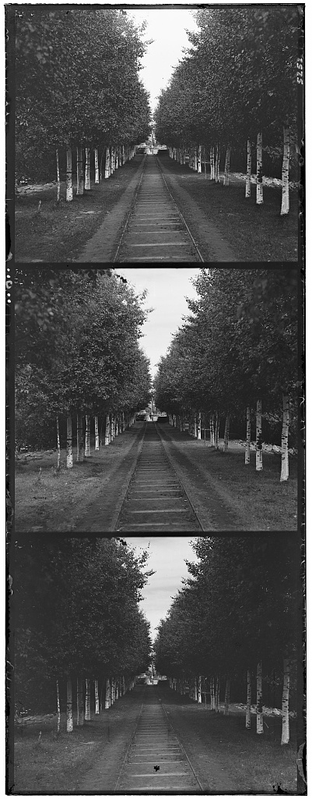
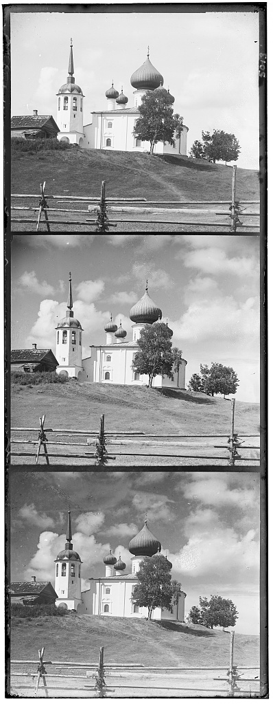
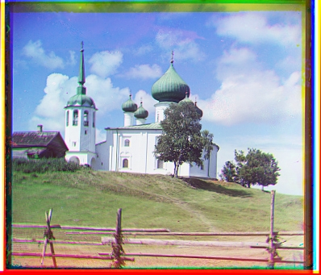
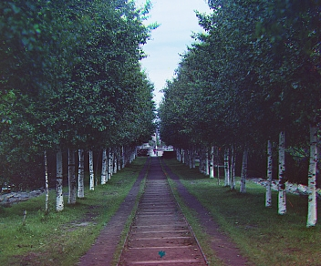
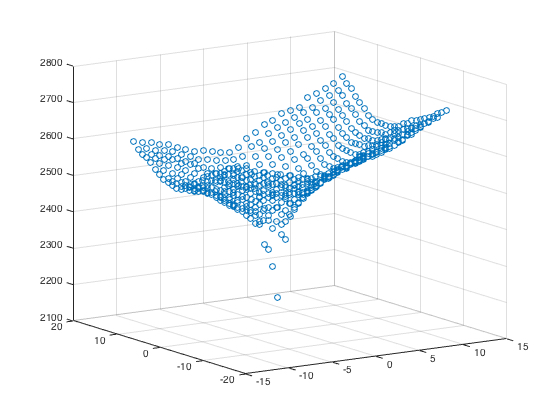
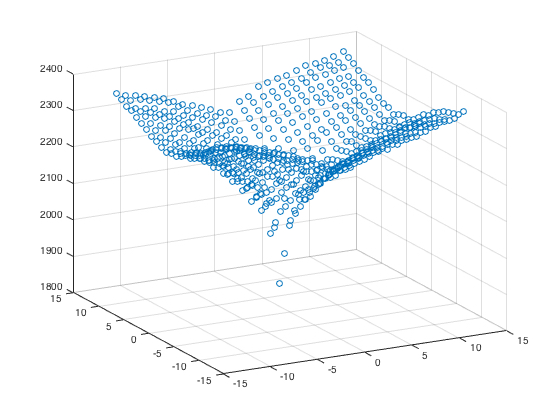
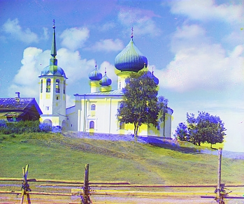
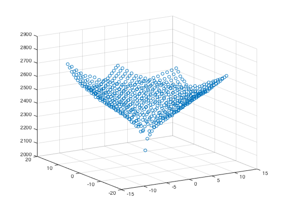
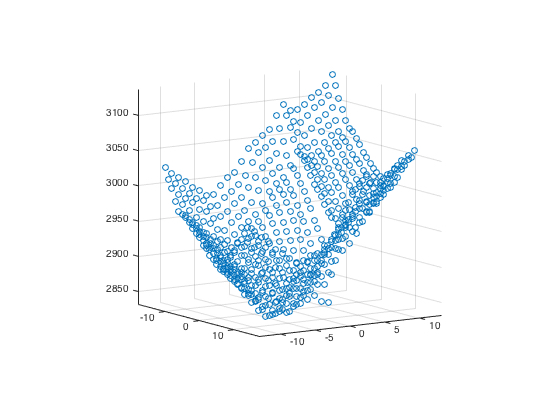

The Method
The goal in this assignment was to create a single color image from a strip of three gray-scale images, each of which was taken with either a red, green, or blue filter.
The high level methodology for achieving this involved 3 main steps:
- Divide the original strip of three frames into three seperate images.
- Find the optimal translation on each frame to achieve a proper allignment of all three frames.
- Combine the translated red, green, and blue frames to form a single color image.
Initial Implementation
My first implementation was successful, but used Matlab's imregister function. I will discuss this implementation in brief and save the discussion of most details for the description of my second implementation.
Method
- I begin by dividing the picture into 3 sepearate frames by finding the height of the original image, dividing by 3, and taking the floor of the result. I take subranges of the original image that are this new height tall and the original width.
-
Next, I use Matlab's
imregisterfunction to align both the blue and green channels to the red channel. I found that the'Similarity'mode of imregister delivered the most consistent results. - Finaly, I combine all 3 channels into a single 3d matrix and display it as the color image.


 
Second Implementation
After learning that we were supposed to implement the image registration ourselves at lecture on Wednesday, I rewrote my solution. The code for my solution and my implementation of sum of squared differences are embedded below.
Solution Version 2
SSD Implementation
Method
- Like I did in my frist implementation, I began by seperating the given image into its red, green, and blue frames.
- Next, I begin the allignment process by cropping the red frame in by 25 pixels on all sides in order to get a more accurate measure of allignemnt. I then find the proper allignement of the blue frame to the red frame by iterating through translations from -12 pixels to +12 pixels in both the x and y direction. At each translation, I calculate the SSD and add the results to an array. The minimum value represents the optimal placement. Plots will be included below with each result. The green channel is then alligned in the same way.
- Finaly, I combine all 3 properly cropped channels into a single 3d matrix and display it as the color image.
  
The plot for allignment of the green and blue channel appear on the left and right respectively.
  
The plot for allignment of the green and blue channel appear on the left and right respectively.
Conclusion
I achieved the greatest success using the built in imregister function in my first implementation. Using it in 'affine' mode accounted for rotation and performed best on more complicated images (i.e. an image with many logs on a river). However, 'Similarity' delivered the most consistent results in the sense that it delivered passable results over the widest range of images. This method was also significantly better performance wise and took much less time to execute than my second implementation.
I also achieved success implemennting registration myself. In some cases (such as the photograph of the road in the forrest) my implementation achieved better results than imregister In other cases (like the image of the castle), one channel remained slightly misalligned. I suspect that this occasional missalignment is due to SSD being used to find optimal allignment.